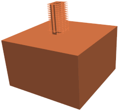
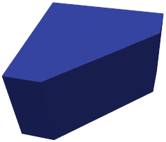
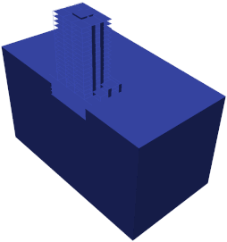
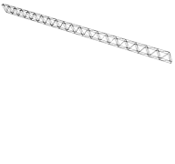

State-of-the-art tools required for efficient modeling of half-space and parallel computing capabilities are included in Seismo-VLAB. For example, perfectly matched layer (PML) for absorbing boundary conditions; domain reduction that incorporates wave-field incoherency in truncated computational domains; dynamic nonlinear solvers for time-domain analyses of inelastic problems; cutting edge parallel linear system solvers; domain decomposition method; and a series of plasticity models are available.
In this gallery, we describe some of the features implemented in SVL as well as some applications in the context of structural and geotechnical engineering.
DOMAIN DECOMPOSITION
Domain decomposition in Seismo-VLAB is employed to performa a parallel execution using openMPI. The domain partition is carried out using Metis software at the Pre-Analysis. Here, the model domain is divided so that the number of elements are almost uniform across processors.
The figure shows the domain decomposition performed to a 3D Soil-Structure Interaction building model using different number of processors. In this animation, the domain is sequentially divided from one to eleven partitions. Note how the elements are uniformly clustered leading to very similar colored volumes. As a reference, the mesh has 121944 nodes in total, 105825 elements divided as follows: 2164 lin3DFrame2, 7388 lin3DShell4, and 96273 lin3DHexa8 and PML3DHexa8 elements. In addition, 7 different materials and 19 different sections are employed to define both soil and building domain. The connections between shell/frame and solid as well as PML and soil elements are performed through kinematics constraints. Then, 26247 Constraints are used in order to tie the model together. The SSI problem has around 700000 degrees of freedom in total.

Domain decomposition of a 3D SSI problem model using different number of processors.
DOMAIN REDUCTION METHOD
The domain reduction method (DRM) is employed in Seismo-VLAB to transmit a ground motion inside the near-field. Currently homogeneous and heterogeneous elastic half-space can be generated inside the near-field using the Plane-Wave case. More sophisticated ground motion can be genarted in the near-field using the General-Wave case.
Animation of the 2D velocity amplitude field computed using the DRM load modeling for an inclined wave at incident angle of 15 degrees in a homogeneous half-space.
The animation on the left shows the velocity field amplitude at different time steps for a 2D rectangular homogeneous and elastic half-space. The soil domain has a horizontal length 150 [m] and vertical length 100 [m]. In this animation the DRM is employed to generate an sv-wave propagating in 15 degrees. As a reference, the finite element model has 46202 nodes, 701 restrains, and 16402 elements divided into 15000 lin2DQuad8 and 1402 ZeroLength1D placed along the boundary to absorb possible scatter waves.
The animation on the right shows the velocity field amplitude at different time steps for a 3D rectangular homogeneous and elastic half-space. Note how the inclined sv-wave is generated with a vertical angle of 15 degrees and a horizontal angle of 30 degrees. This animation confirms the proper implementation of DRM in 3D settings. As a reference, we now consider a truncated soil domain with a horizontal length 130 [m], and 130 [m], and vertical length 100 [m]. The soil domain is now discretized using 174376 lin3DHexa8 elements, and the surface boundaries are fixed.

Animation of the 3D velocity amplitude field computed using the DRM load modeling for an inclined wave at incident angle of 15 degrees in a homogeneous half-space.
PERFECTLY-MATCHED LAYER
Perfectly Matched Layer (PML) for emulating semi-infinite half-space for 2D and 3D analyses are available in Seismo-VLAB. Currently, quadrilateral PML2DQuad4 of four and PML2DQuad8 of eight nodes are available in 2D, while hexahedral PML3DHexa8 of eight and PML3DHexa20 twenty nodes are implemented for 3D.
A snapshot of velocity amplitude field in 2D under vertical loading at the surface of the domain.
The animaton on the left shows a truncated soil domain with a horizontal length 150 [m] and vertical length 100 [m]. Isotropic linear elastic material for the soil is employed and plane-strain conditions are enforced. A PML zone of 25 [m] thickness is provided along the truncated domain as well. The model is subjected to a downward point load force, located at the middle on the surface. As a reference, the finite element model has 1718 nodes, 61 restrains, 162 constraints, and 1578 elements divided as 980 lin2DQuad4 and 580 PML2DQuad4. Note how in the animation no reflections is generated from the boundaries.
The animation on the right sows the same results but extended to a 3D case. Here a truncated soil domain with a horizontal length 150 [m], and 150 [m], and vertical length 100 [m]. Eight-node hexahedral elements are employed to discretize the domain. The linear and elastic soil domain is now discretized using 13500 lin3DHexa8 elements. A PML layer of 25 [m] is discretized using 18500 PML3DHexa8. Note that the velocity amplitude field at different time steps is smooth and that there is no reflections is generated from the boundaries demonstrating the proper implementation of PML in 3D settings as well.
A snapshot of velocity amplitude field in 3D under vertical loading at the surface of the domain.
MODELING OF TRUNCATED HALF-SPACE
An efficient, reliable and robust numerical platform for high-fidelity simulation of wave propagation in heterogeneous half-spaces must consider the domain reduction method (DRM) and the perfectly matched layer (PML). The applications below show how these two features can be applied to very different scenarios.
Simulation of a earth dam structure subjected to a vertical wave propagating upwards in heterogenous half-space
The animation on the left shows the solution of a wave propagation in a half-space for the analysis of a linear elastic earth dam problem. The domain reduction method (DRM) is employed in order to transmit the ground motion of an in-plane sv-wave propagating upwards inside the near-field domain. Also, a zone with PML is provided along the truncated domain to absorb the scattered waves. Note how inside the near-field domain, the DRM elements successfully generate the sv-wave propagating upwards; however, because of the presence of the dam, a scattered field is generated outside the DRM (near-field) domain.
The animation on the right shows the solution of a SSI problem applied to the analysis of a building. The 3D model consists on lin3DFrame2, lin3DShell4, lin3DHexa8, and PML3DHexa8 elements. Note how inside the near-field domain, the DRM elements successfully generate the sv-wave propagating upwards; however, because of the presence of the bridge, a scattered field is generated outside the DRM (near-field) domain which is totally absorbed by the PML elements.

Soil-Structure Interaction problem of a building subjected to a vertical wave propagating upwards in heterogenous half-space.
NONLINEARITY
Nonlinear analysis in Seismo-VLAB is required when large deformation or non-linear material behavior is used. Solid elements such as kin2DTruss2, kin3DTruss2, kin2DQuad4 and kin3DHexa8 currently allows large deformation. On the other hand, structural elements such as kin2DFrame2 and kin3DFrame2 allow this feature. Nonlinear material behaviour such as plasticity models are implemented in Plastic1DJ2, Plastic3DJ2 and PlasticPlaneStrainJ2. Bounding surface multi-axial plasticity are also available in PlasticPlaneStrainBA, and Plastic3DBA.

Deformed configuration at different load increments for a truss beam under large vertical load (Courtesi of prof. Louis Yaw from Walla Walla university.).
The animation on the left consist on a 3D clamped truss beam that has two point loads applied at its end. The problem setting is defined to test kin3DTruss2 element with material type Elastic1DLinear. The cantilevered space truss is 10 long, 0.1 wide and 0.5 deep. The truss has two top chord members and two bottom chord members. For all truss elements the area used is 1.0. The nodes on the left are restrained in X, Y, and Z directions. Two vertical forces at the right end. The animation shows that the the 3D Space truss beam experiences lateral torsional buckling due to large deformations.
The animation on the right shows the solution of the wave equations for the analysis of an earth dam problem. In this problem, we use a conventional approach for defining transmitting boundaries - i.e., using Lysmer-Kuhlemeyer dashpots with prescribed nodal forces in terms of the incident wave velocity along the far-field boundary. The crest of the dam is a nonlinear material, and the far-field is assumed to be linear. The finite element mesh in has 57770 degrees of freedom in total, 28885 nodes are used to generate the mesh discretization, thus 28847 elements, 203 boundary nodal forces are applied, and 1501 time steps are required for the simulation.
Permanent deformation developed in a gratitational dam due to earthquake excitation.